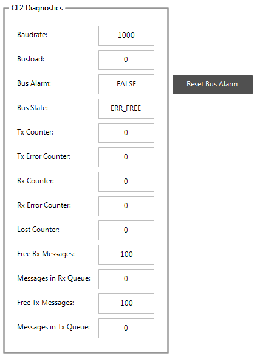

CANEcho test (manual test)¶
Overview¶
Requirements¶
CODESYS 3.5 SP9 or later
CAN Analyzer with messages sending functionality
CANEcho project (included in runtime delivery: Templates/CANMiniDriverConformanceTest)
Test procedure¶
Preparations¶
Plug a CAN Analyzer into the CANbus of your PLC.
Open CAN Echo project (Templates/CANMiniDriverConformanceTest/CANEcho.project), update PLC device to you device and download it.
Start the application and open the integrated “Visualization”.
Enter NetID, baud rate, Number of Tx messages, and 29-bit capability. Enable the TestServer.
Message content test¶
With CAN Analyzer, send the following messages and check if they are echoed correctly (same DLC, DATA, RTR…) by your PLC:
Message with 8 Bytes.
Message with 4 Bytes.
Message with 0 Bytes.
RTR Message with 0 Bytes.
29 Bit CANID Message (if supported).
Message loss test and diagnosis counter¶
Send several cyclic messages with CAN Analyzer.
Let test run for a while (e.g. 5 minutes).
Stop sending messages.
- Compare receive message number and transmit message count in CAN Analyzer.They have to be equal!
Check diagnosis counter in integrated visualization. See documentation in CANL2 lib.
Message latency test¶
In integrated visualization, enter a CANID in Message Latency Test. This CANID will be used for message latency test.
Enable message latency test.
Send a cyclic message on the configured CANID. E.g. every 100ms.
- In Visualization check:Minimum time span minimum time span between two CAN messages
Maximum time span maximum time span between two CAN messages
Should be:Minimum time span should be the message cycle time (e.g. 100ms)Maximum time span should be the message cycle time or message cycle time + 1 task cycle.
Note: If the maximum time span is higher, then there is a jitter on message receiving. If this jitter is too high, then CANopen Heartbeat or Nodeguarding may not work (consequence: slaves will be reset).
Repeat the test with higher bus load. Send additional fast cyclic messages and check the message jitter.
Bus diagnostic test¶
This section describes how to test bus error detection and BusOff recovery:
Open the integrated visualization.
The group box “CL2 Diagnostics” shows all MiniDriver diagnostic counters:

Figure 26: Bus diagnostics
Bus State should be ERR_FREE and Bus Alarm FALSE.
Now send cyclic messages with CAN Analyzer. Check following diagnostic information:
Tx Counter and Rx Counter are incremented.
Lost Counter is 0.
Tx Error and Rx Error Counter is 0.
Bus State remains ERR_FREE and Bus Alarm FALSE.
Now generate a bus failure: Short circuit CAN Low and CAN High some seconds:

Figure 27: CAN Sub-D
- Bus State signals a bus error – normally bus off. In bus off state, most CAN chips need a reset command. This will be signaled by Bus Alarm = TRUE. As long as Bus Alarm is TRUE, no messages will be sent or received (Tx an Rx Error Counter remain values).Now the application has to trigger a Reset Bus Alarm command which leads to a CMD_ResetAlarm call. In this function the MiniDriver has to reset the chip.You can test this functionality by pressing the “Reset Bus Alarm” button.After that check the following:
Bus Alarm should change to FALSE
Bus State is unequal BUS_OFF
RxCounter and TxCounter will be incremented again Driver sends and receives messages again Reset Bus Alarm implementation is correct.